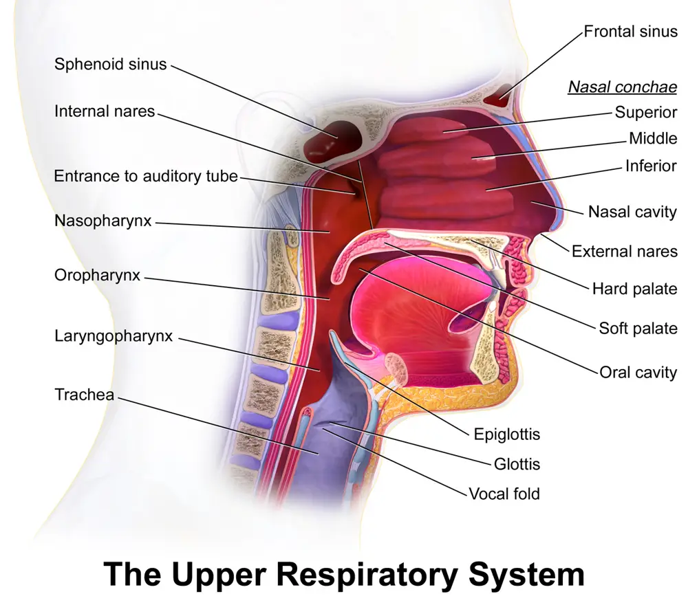
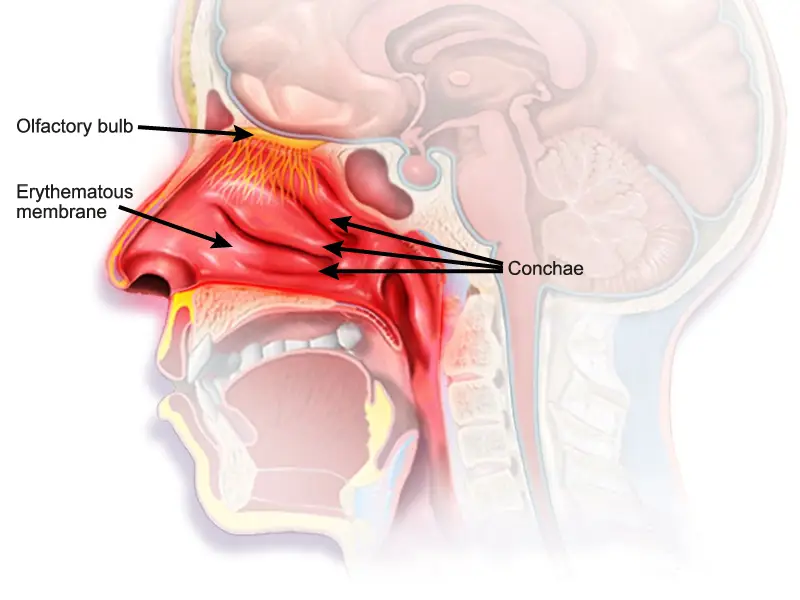

Ce diagnostic occupe le cinquième rang de fréquence dans la Phase A de l'écoulement nasal et ne porte aucun rang d'exclusion urgente.
DX.3 — Rhinite non allergique
La rhinite non allergique se reconnaît par élimination : symptômes nasaux persistants, tests allergologiques négatifs et examen sans cause infectieuse ni structurelleS2S1. Le médecin cherche un déclencheur évitable, surtout un spray vasoconstricteur, puis conduit un essai thérapeutique local dont aucune molécule n'a cette indication dans l'information professionnelle suisse (AIPS)AIPS 54189AIPS 51257S4.
1. Définition
La rhinite non allergique est une rhinite persistante, faite d'obstruction, de rhinorrhée ou d'écoulement postérieur, qui n'est ni allergique ni infectieuseS2. Le groupe de travail de l'Académie européenne d'allergologie et d'immunologie clinique (EAACI) distingue les formes hormonale, gustative, professionnelle, médicamenteuse et idiopathiqueS2.
2. Épidémiologie (Suisse, puis Europe)
Aucune prévalence suisse propre n'a été trouvée dans les sources lues ; les chiffres disponibles viennent d'Europe. L'EAACI estime qu'environ 50 % des personnes atteintes de rhinite persistante présentent un sous-type non allergiqueS2. Une étude italienne indique une prévalence de 27 % pour la rhinite non allergique, contre 12 % pour la rhinite allergiqueS3. Les chiffres utiles et la répartition des sous-types montrent pourquoi ce diagnostic pèse lourd en médecine de premier recours.
Sprays vasoconstricteurs, bêtabloquants, inhibiteurs de l'enzyme de conversion, acide acétylsalicylique ou anti-inflammatoires, antidépresseurs, méthyldopa
L'EAACI décrit une physiopathologie hétérogène, dominée par une dysrégulation neurogène qui augmente la production de mucus et dilate les vaisseauxS2. L'hyperréactivité nasale désigne des symptômes provoqués par des stimuli banals, comme un changement de température ou d'humiditéS2. Les mécanismes par symptôme, le cercle du rebond et les profils cellulaires relient chaque plainte à une cible thérapeutique.
Nerf pétreux profond et grand nerf pétreux ; fibres sympathiques et parasympathiques préganglionnaires vers les glandes nasales, palatines et lacrymales
Neurectomie vidienne
Il réduit la rhinorrhée, mais il assèche l'œil et engourdit parfois le palais.
La démarche procède par élimination, car l'EAACI exige de distinguer la rhinite non allergique d'une rhinite allergique ou infectieuse par l'anamnèse, les tests allergologiques et l'examen avec endoscopieS2. Le médecin écarte d'abord un symptôme unilatéral, qui impose un bilan oto-rhino-laryngologique (ORL) pour exclure polypes ou anomalie structurelleS1. La démarche en six questions ordonne ces étapes, et le partage des rôles précise qui fait quoi.
L'anamnèse cherche le déclencheur, car l'éviction coûte moins qu'un traitement et suffit parfoisS1. Elle relève aussi les traitements déjà entrepris, l'intensité sur une échelle visuelle analogique et le retentissement sur le sommeil et le travailS1. Les questions ciblées et les drapeaux rouges séparent la forme banale d'une cause à adresser.
L'examen suit la liste des Hôpitaux universitaires de Genève (HUG) : signes vitaux, conjonctives, peau, rhinoscopie antérieure, oropharynx, auscultation et, au besoin, débit expiratoire de pointeS1. Chaque région a sa fenêtre : nez en rhinoscopie antérieure, endoscopie nasale, yeux et peau, oropharynx et thorax.
Voies aériennes supérieures en coupe sagittale
Ce schéma en couleurs de Blausen Medical montre les cornets, la fosse nasale et le rhinopharynx que l'examen exploreS7.

Lecture guidée.
Le cornet inférieur forme la cible principale de la rhinoscopie ; son volume avant et après décongestion oriente la conduite.
La partie antérieure de la fosse nasale reste visible au spéculum ; l'aspect de la muqueuse s'y juge directement.
Les choanes, en arrière, ne se voient qu'en endoscopie ; une lésion postérieure échappe à la rhinoscopie.
Décision. Le médecin adresse en endoscopie ORL si la rhinoscopie ne montre pas la région postérieure chez un patient au symptôme unilatéralS1S2.
Le syndrome dominant oriente à la fois le diagnostic et le traitement, comme le recommande l'EAACI avant tout gesteS2. Le tableau des syndromes oppose la rhinite non allergique aux autres causes d'écoulement nasal chronique du LOT_030.
Aucun critère chiffré unique n'existe dans les sources lues ; le diagnostic positif réunit des symptômes persistants, une absence de sensibilisation et un examen sans autre causeS2S1. Un test positif n'impose pas l'allergie, puisque le diagnostic d'allergie exige une sensibilisation et une histoire compatibleS1. Les critères réunis se lisent dans un tableau, et les échelles de mesure chiffrent la gêne avant tout traitement.
Les examens servent surtout à exclure une allergie ou une cause structurelle, car aucun test ne confirme seul la rhinite non allergiqueS2. Le médecin demande donc des tests allergologiques, adresse pour une exploration ORL si besoin, puis interprète la cytologie nasale lorsque le spécialiste la réalise. Selon l'EAACI, le scanner reste hors de la routineS2, et la liste des examens inutiles évite les demandes sans conséquence sur la conduite.
L'arbre suit l'ordre de l'EAACI : phénotyper la plainte, conduire au moins 3 mois de traitement médical bien observé, puis choisir un geste selon le symptôme dominantS2. L'arbre décisionnel part de la plainte et aboutit à une conduite datée. La lettre d'adressage transmet au spécialiste ce dont il a besoin pour choisir le geste.
11. Prise en charge selon les recommandations suisses
11.A But
Le traitement vise à supprimer le déclencheur, puis à réduire le symptôme dominant avec le moins d'effets indésirables possibleS2S1. Il vise aussi à rompre le cercle du rebond chez le patient dépendant de son sprayS4.
11.B Moyens
Faute de traitement spécifique, l'EAACI décrit un essai par étapes avec corticoïde nasal, bromure d'ipratropium et antileucotrièneS2. Le traitement structuré et le sevrage du vasoconstricteur donnent molécule, durée, contrôle et critère d'échec ; les options chirurgicales chiffrent les résultats.
Ce schéma en couleurs de Blausen Medical montre une muqueuse érythémateuse et des cornets gonflés, aspect visé par le sevrage du sprayS6.

Lecture guidée.
La muqueuse rouge et épaissie traduit une vasodilatation entretenue par le rebond.
Le cornet inférieur gonflé ferme la fosse ; il doit diminuer après le sevrage si l'atteinte reste muqueuse.
Le bulbe olfactif, au toit de la fosse, rappelle qu'une obstruction haute peut gêner l'odorat.
Décision. Le médecin juge le sevrage réussi quand l'obstruction cède sans spray, et il adresse en ORL si le cornet reste obstructif après 3 moisS4S2.
11.C Surveillance
Le patient note ses symptômes sur une échelle visuelle analogique, ce qui permet de juger objectivement la réponse au traitementS1. La surveillance datée fixe les contrôles, les seuils d'alerte et la conduite à chaque échéance du suivi.
11.D Pronostic
Le rebond aigu cède en 1 à 2 semaines, alors que la rhinite médicamenteuse installée guérit rarement sans sevrage encadréS4. Après chirurgie nerveuse, les répondeurs dépassent 77 % à 3 mois et 80 % à 6 mois dans une méta-analyse citée par l'EAACIS2.
Aucune AIPS lue ne vise la rhinite non allergique ; chaque molécule reste hors AIPS, sans dose, et l'éviction se juge sur les symptômes à 4 semainesAIPS 54189AIPS 51257S1.
Mesure ou molécule
Dose
Durée
Contrôle
Critère d'échec et conduite
Source
Éviction du déclencheur (tabac, irritant, médicament)
L'AIPS vise la « rhinite allergique saisonnière et chronique (perannuelle) », les polypes nasaux et la rhinosinusite aiguë non compliquéeAIPS 54189.
Rhinite non allergique
Hors AIPS : aucune dose n'est donnée ici pour cette indicationAIPS 54189.
Contre-indications
L'AIPS cite l'« Hypersensibilité au principe actif ou à l'un des excipients conformément à la composition »AIPS 54189.
Grossesse
L'AIPS précise : « Le traitement par des corticoïdes en application nasale pendant la grossesse et l'allaitement n'aura lieu qu'en cas d'absolue nécessité »AIPS 54189.
Allaitement
La même phrase de l'AIPS s'applique : traitement nasal seulement « en cas d'absolue nécessité »AIPS 54189.
Piège
L'efficacité dépend d'un usage régulier, et l'AIPS signale une entrée en action différéeAIPS 54189.
L'AIPS mentionne le « Traitement de la rhinite allergique saisonnière et perannuelle »AIPS 51257.
Rhinite non allergique
Hors AIPS : l'usage repose sur l'EAACI, sans dose affirmée iciS2AIPS 51257.
Contre-indications
L'AIPS cite l'« Hypersensibilité au principe actif ou à l'un des excipients selon la composition »AIPS 51257.
Grossesse
L'AIPS indique que « le médicament ne devrait être administré que si le bénéfice potentiel justifie le risque potentiel pour le foetus »AIPS 51257.
Allaitement
L'AIPS précise : « Allergodil pulvérisation nasale ne devrait pas être utilisé pendant l'allaitement, car l'expérience en la matière n'est pas encore suffisante »AIPS 51257.
Enfant
L'AIPS précise que le médicament « ne doit pas être utilisé dans ce groupe d'âge » avant 12 ansAIPS 51257.
Monographie — xylométazoline (Otrivin Rhume Classic®), cause à sevrer
Rôle dans ce diagnostic
La molécule ne traite pas la rhinite non allergique ; son abus la provoqueAIPS 24926S4.
Durée AIPS
L'AIPS précise qu'Otrivin « ne doit pas être utilisé pendant plus d'une semaine, une utilisation plus longue pouvant entraîner une rhinite médicamenteuse »AIPS 24926.
Contre-indications
L'AIPS cite notamment la « Rhinite sèche (rhinitis sicca) », la « Rhinite atrophique » et le glaucome à angle ferméAIPS 24926.
Grossesse
L'AIPS indique qu'Otrivin Rhume Classic « ne doit pas être utilisé par précaution en cours de la grossesse »AIPS 24926.
Allaitement
L'AIPS précise : « Pendant l'allaitement, Otrivin Rhume Classic doit être utilisé uniquement sur prescription médicale »AIPS 24926.
Piège
Un spray prolongé chez un patient atrophique cumule deux fautes : abus et contre-indicationAIPS 24926.
12. Prévention
La prévention porte surtout sur le bon usage des vasoconstricteurs, puisque plus de 70 % des patients se les procurent sans conseilS4. Les mesures de prévention ciblent aussi les irritants et les médicaments déclencheurs.
Selon l'EAACI, environ la moitié des rhinites persistantes ne relèvent pas d'une allergie et entrent dans ce cadreS2.
Le diagnostic se pose par exclusion : tests négatifs, pas d'infection, pas de cause structurelleS2S1.
Un symptôme unilatéral sort du cadre de la rhinite non allergique et impose une endoscopie ORLS1.
Un vasoconstricteur nasal utilisé au-delà d'une semaine fait craindre une rhinite médicamenteuse, selon l'AIPS de la xylométazolineAIPS 24926.
Aucune molécule n'a cette indication dans l'AIPS ; toute dose reste donc hors AIPSAIPS 54189AIPS 51257.
La chirurgie se discute après au moins 3 mois de traitement médical bien observéS2.
Le corticoïde oral reste sans efficacité démontrée dans la rhinite non allergique, et l'EAACI le déconseilleS5.
Le geste suit le symptôme : cornet pour l'obstruction, nerf nasal postérieur pour la rhinorrhéeS2.
14. Pièges et questions fréquentes à l'examen fédéral suisse
Le piège principal consiste à étiqueter « allergique » une rhinite dont les tests sont négatifs, puis à multiplier les antihistaminiques orauxS1. Un second piège oublie de demander depuis combien de temps le patient utilise son sprayS4 ; les questions d'entraînement reprennent ces deux pièges.
Toutes les sources ont été lues le 13.11.2026 (Europe/Zurich) ; la date propre de chaque document figure dans sa ligne.
[S1] Leroquais C, Länzlinger Y ; experts Harr T, Jandus P, Meynard A. Hôpitaux universitaires de Genève (HUG), Service de médecine de premier recours. Stratégie « La rhinite allergique », 2023, lue le 13.11.2026. https://www.hug.ch/sites/interhug/files/2023-09/strategie_rhinite_allergique_2023_avec_lien.pdf
[S2] Lundberg M, van Waterschoot J, Moyaert M, et al. Surgical Management of Non-Allergic Rhinitis — An EAACI Task Force Position Paper. Allergy 2026;81(11):3779-3796. doi:10.1111/all.70424 (texte intégral lu le 13.11.2026 ; source européenne). https://pmc.ncbi.nlm.nih.gov/articles/PMC13753671/
[S3] Rizzi A, Parrinello G, De Corso E, et al. Mometasone Furoate in Non-Allergic Rhinitis: A Real-Life Italian Study. J Pers Med 2022;12(7):1179. doi:10.3390/jpm12071179 (texte intégral lu le 13.11.2026 ; source européenne, Italie). https://pmc.ncbi.nlm.nih.gov/articles/PMC9322075/
[S4] Stinson RJ, Sadofsky LR. Part II — imidazolines and rhinitis medicamentosa: how can we tackle the rebound dilemma? Front Pharmacol 2025, accepté le 15.08.2025 (texte intégral lu le 13.11.2026 ; source européenne, Royaume-Uni ; certaines données citées viennent d'études non européennes). https://pmc.ncbi.nlm.nih.gov/articles/PMC12698587/
[S5] Hox V, Lourijsen E, Jordens A, et al. Benefits and harm of systemic steroids for short- and long-term use in rhinitis and rhinosinusitis: an EAACI position paper. Clin Transl Allergy 2020;10:1. doi:10.1186/s13601-019-0303-6 (texte intégral lu le 13.11.2026 ; source européenne). https://pmc.ncbi.nlm.nih.gov/articles/PMC6941282/
[S6] Blausen.com staff (2014), traduction ReneeWrites. Rhinitis medicamentosa mucosa nasal, schéma en couleurs, licence CC BY 4.0, Wikimedia Commons, consulté le 13.11.2026. https://commons.wikimedia.org/wiki/File:Rhinitis_medicamentosa_mucosa_nasal_en.png
[S7] BruceBlaus, Blausen.com staff (2014). Blausen 0872 UpperRespiratorySystem, schéma en couleurs, licence CC BY 3.0, Wikimedia Commons, consulté le 13.11.2026. https://commons.wikimedia.org/wiki/File:Blausen_0872_UpperRespiratorySystem.png
[AIPS 54189] Swissmedic, information professionnelle (AIPS) Nasonex® spray doseur nasal (furoate de mométasone), Organon GmbH, n° 54189, mise à jour Avril 2021, lue le 13.11.2026. https://files.refdata.ch/simis-public-prod/MedicinalDocuments/05b407ec654940d49d928bbc54d8c05d-fr.html
[AIPS 51257] Swissmedic, AIPS Allergodil® pulvérisation nasale, solution (chlorhydrate d'azélastine), n° 51257, mise à jour Février 2021, lue le 13.11.2026. https://files.refdata.ch/simis-public-prod/MedicinalDocuments/c4d5b43e9b0b4d8b94b2523502a1a68c-fr.html
[AIPS 24926] Swissmedic, AIPS Otrivin Rhume Classic® (chlorhydrate de xylométazoline), Haleon Schweiz AG, n° 24926, 44939, mise à jour Février 2025, lue le 13.11.2026. https://files.refdata.ch/simis-public-prod/MedicinalDocuments/7aa9b021e41e40498ad21af61c26b38a-fr.html
Le contenu reprend les sources citées ; il n'a pas été validé cliniquement par un médecin.